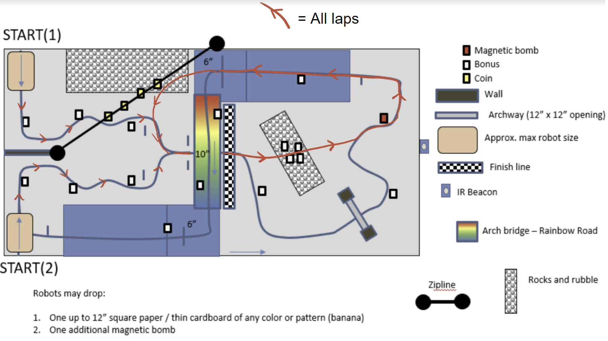
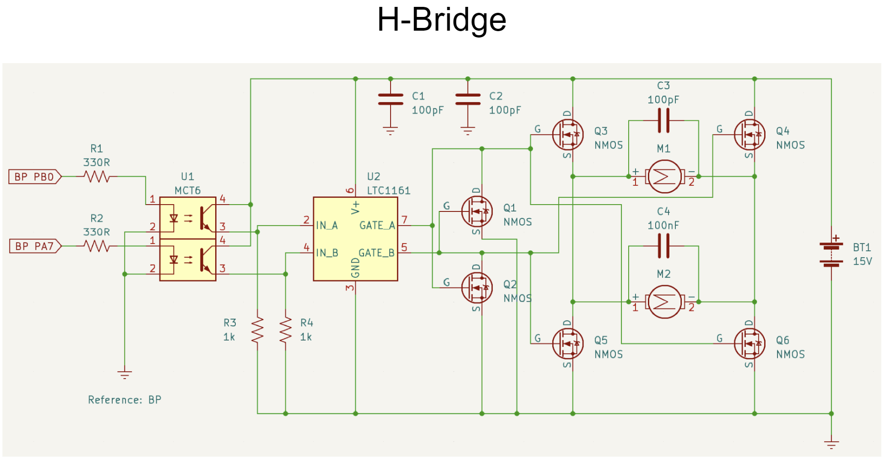
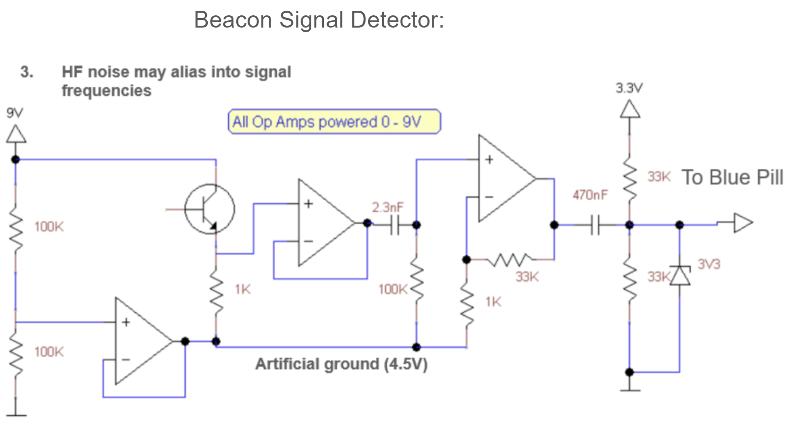
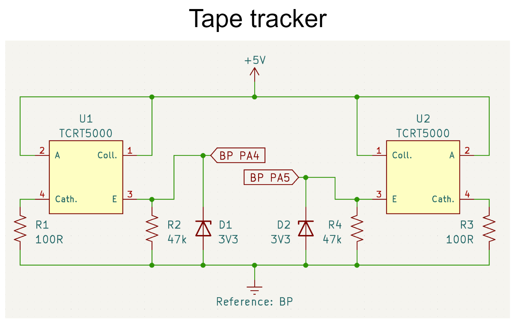
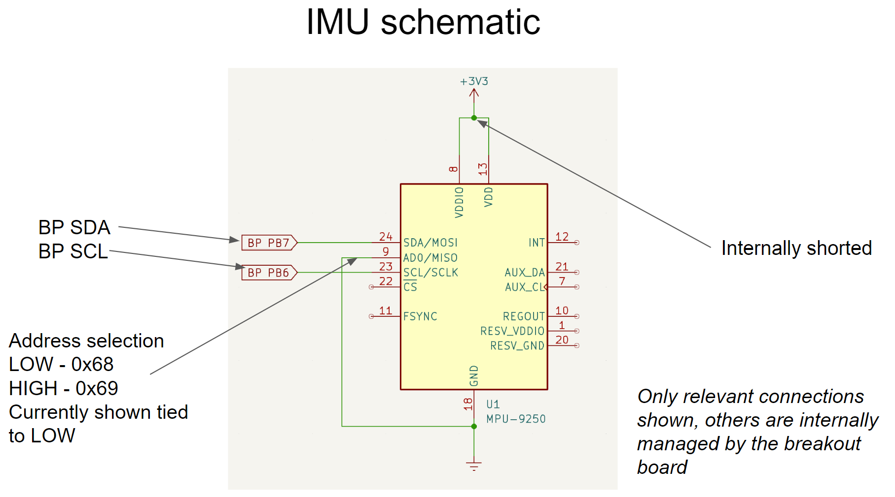

-
PCB Project
Using KiCad, I designed a signal-generator chip that utilizes a 15V DC signal that passes through a voltage regulator to produce 5V DC. This 5V is then converted to -5V to power the rails of an op-amp, enabling control of the output signal amplitude. The 5V also powers a 100 kHz timer/oscillator, producing a square wave signal that can be tuned in combination with potentiometers and the op-amp. The tuned signal can be read from a through-hole test port.
If we want to design such a PCB, we need to first create a schematic file of the form “schematicname.kicad_sch” where we design and properly label the schematics for the circuit. Sometimes it is necessary to manually create your own components if the component is not available in the library.

We now have finished designing our schematic. But how do we go from a schematic to the actual physical layout of the circuit? The answer is using footprints. In KiCad, the physical layout of a component as it will be placed on the printed circuit board (PCB) is called its footprint. This means that we have to apply the appropriate footprint for each component. For example, the footprint for a 10 nF capacitor is shown below:
Using our completed schematic with the relevant footprints, we can now create a PCB file of the form “pcbname.kicad_sch” and import our schematic. An example of the skeleton setup of our circuit is shown below:
The next step is to actually connect the components. Remember in the beginning where I showed two separate schematics? This means that we have to make two separate connection layers, both utilizing copper for the connections. Once we have properly connected all our components, we can generate the relevant gerber files. The gerber files will be used to eventually manufacture our circuit. A picture of both the final PCB design as well as the circuit itself are shown below:
-
Fizz Detective
This project focuses on developing a robot in a simulated environment for a project course called ENPH 353. The purpose of the competition is to design a virtual robot that drives around a track (which consists of, among other things, winding roads, a hill with sharp turns, and a rapidly moving model of Baby Yoda) while simultaneously reading signs, character by character, and storing the word of each sign to eventually display them in the form of a short story. In order to navigate the course, we applied a filter to the camera of the robot and then utilized a PID controller based on the output of the filter. In order to read the signs, we used a convolutional neural network.
-
Mario Kart Robot
For this project, three other students and I developed a robot for a competition based on the video game Mario Kart. The competition was as follows; For a set period of time, two robots would race around a track and have the option to pick up blocks. Three points would be awarded for each lap completed and one point for each block that was picked up and the robot with the most points at the end would be the winner of the round. There were also magnetic "bombs" around the track. A diagram of the track as well as the path our robot took is shown below:

Some of the features of our robot included an IR beacon detector in order for our robot to cut through the rocks, a tape tracker which utilizes a PID algorithm to follow, and an H-bridge to obtain the correct voltage to power our motor.
 
 
-
Photonic Rotor speed controller
For this project, I built a photonic rotor speed controller.